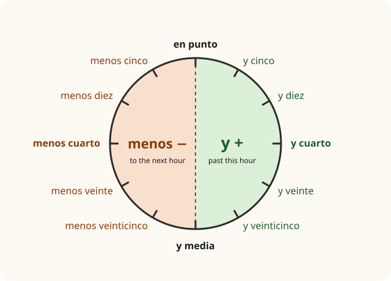

Lesson 3: Numbers, Days, Dates and Time¶
Los números, los días, las fechas y la hora
Numbers are everywhere: prices in a shop, the platform of a train, a phone number, the time of a class, your age, your birthday. They are also one of the hardest things to catch when someone speaks quickly, so it pays to practise them until they come without thinking. In this lesson you learn to count from zero to a thousand, to give prices and phone numbers, to name the days and months, to say the date, and to tell the time in the way people do in Spain and in Latin America.
Learning outcomes
By the end of this lesson you will be able to:
- count from 0 to 1,000 and use uno, un and una correctly;
- ask and give prices, phone numbers and ages;
- name the days of the week and the months of the year, and say the date;
- ask and tell the time, and say at what time something happens;
- read times written in the 24-hour clock, as in timetables.
masculinefeminineplural
3.1 Dialogue: signing up for a course¶
Daniel, from Lesson 2, wants to join an extra conversation class at his language school in Salamanca. He goes to the reception desk.
- Recepcionista: Buenas tardes. ¿Qué desea? — Good afternoon. Can I help you?
- Daniel: Buenas tardes. Quiero información sobre el curso de conversación. — Good afternoon. I'd like some information about the conversation course.
- Recepcionista: Sí, claro. Hay clases los martes y los jueves. — Yes, of course. There are classes on Tuesdays and Thursdays.
- Daniel: ¿A qué hora son las clases? — What time are the classes?
- Recepcionista: De seis y media a ocho de la tarde. — From half past six to eight in the evening.
- Daniel: Perfecto. ¿Cuánto cuesta? — Perfect. How much does it cost?
- Recepcionista: Cuesta ochenta y cinco euros al mes. — It costs eighty-five euros a month.
- Daniel: ¿Y cuándo empieza el curso? — And when does the course start?
- Recepcionista: El martes cinco de marzo. ¿Cómo se llama usted? — On Tuesday the fifth of March. What is your name?
- Daniel: Daniel Brown. Tengo veintiocho años. — Daniel Brown. I'm twenty-eight.
- Recepcionista: ¿Y su número de teléfono, por favor? — And your phone number, please?
- Daniel: Es el seis, cuatro, siete, veinte, noventa y uno, cincuenta y tres. — It's 647 20 91 53.
- Recepcionista: Muy bien. Hasta el martes, Daniel. — Very good. See you on Tuesday, Daniel.
- Daniel: ¡Hasta el martes! Gracias. — See you on Tuesday! Thanks.
Before the explanations, notice:
- "On Tuesday" has no word for "on". Spanish says el martes ("the Tuesday") for one Tuesday and los martes ("the Tuesdays") for every Tuesday.
- The date puts the day first: el cinco de marzo, "the five of March". Months and days are written with a small letter.
- Daniel "has" his age: tengo veintiocho años, literally "I have twenty-eight years". Spanish never says soy veintiocho.
- Two verbs in the dialogue, cuesta ("it costs") and empieza ("it begins"), belong to a family of verbs whose vowel changes. Learn them as phrases for now; Lesson 10 explains them.
3.2 Vocabulary: the numbers¶
0 to 30¶
| Spanish | Sounds like | Spanish | Sounds like | ||
|---|---|---|---|---|---|
| 0 | cero | [SEH-roh] | 16 | dieciséis | [dyeh-see-SAYS] |
| 1 | uno | [OO-noh] | 17 | diecisiete | [dyeh-see-SYEH-teh] |
| 2 | dos | [dohs] | 18 | dieciocho | [dyeh-SYOH-choh] |
| 3 | tres | [trehs] | 19 | diecinueve | [dyeh-see-NWEH-beh] |
| 4 | cuatro | [KWAH-troh] | 20 | veinte | [BAYN-teh] |
| 5 | cinco | [SEEN-koh] | 21 | veintiuno | [bayn-TYOO-noh] |
| 6 | seis | [says] | 22 | veintidós | [bayn-tee-DOHS] |
| 7 | siete | [SYEH-teh] | 23 | veintitrés | [bayn-tee-TREHS] |
| 8 | ocho | [OH-choh] | 24 | veinticuatro | [bayn-tee-KWAH-troh] |
| 9 | nueve | [NWEH-beh] | 25 | veinticinco | [bayn-tee-SEEN-koh] |
| 10 | diez | [dyehs] | 26 | veintiséis | [bayn-tee-SAYS] |
| 11 | once | [OHN-seh] | 27 | veintisiete | [bayn-tee-SYEH-teh] |
| 12 | doce | [DOH-seh] | 28 | veintiocho | [bayn-TYOH-choh] |
| 13 | trece | [TREH-seh] | 29 | veintinueve | [bayn-tee-NWEH-beh] |
| 14 | catorce | [kah-TOR-seh] | 30 | treinta | [TRAYN-tah] |
| 15 | quince | [KEEN-seh] |
Table 3.1. The numbers from 0 to 30. In Spain the c and z of cinco, once, diez are said like English th: [THEEN-koh], [OHN-theh], [dyehth].
Look at the patterns, which make the list much easier to learn:
- 11 to 15 are single words to learn by heart: once, doce, trece, catorce, quince.
- 16 to 19 are "ten and six", "ten and seven" squeezed into one word: dieci-séis, dieci-siete. The z of diez becomes c.
- 21 to 29 are "twenty and one" squeezed the same way: veinti-uno, veinti-dós. Note the written accents on dieciséis, veintidós, veintitrés and veintiséis: they are needed because these words end in a stressed vowel or s.
30 to 100: the tens¶
| Spanish | Sounds like | Example | |
|---|---|---|---|
| 30 | treinta | [TRAYN-tah] | treinta y uno (31) |
| 40 | cuarenta | [kwah-REHN-tah] | cuarenta y dos (42) |
| 50 | cincuenta | [seen-KWEHN-tah] | cincuenta y tres (53) |
| 60 | sesenta | [seh-SEHN-tah] | sesenta y cuatro (64) |
| 70 | setenta | [seh-TEHN-tah] | setenta y cinco (75) |
| 80 | ochenta | [oh-CHEHN-tah] | ochenta y seis (86) |
| 90 | noventa | [noh-BEHN-tah] | noventa y nueve (99) |
| 100 | cien | [syehn] | cien euros (100 euros) |
Table 3.2. The tens. From 31 onwards, the units are added with y, "and", as separate words.
Common mistake: sesenta and setenta
sesenta (60) and setenta (70) sound alike. Link them to the units: seis → sesenta, siete → setenta. In the same way, seis and siete are often confused at first.
100 to 1,000¶
| Spanish | Spanish | ||
|---|---|---|---|
| 100 | cien | 500 | quinientos |
| 101 | ciento uno | 600 | seiscientos |
| 150 | ciento cincuenta | 700 | setecientos |
| 200 | doscientos | 800 | ochocientos |
| 300 | trescientos | 900 | novecientos |
| 400 | cuatrocientos | 1.000 | mil |
Table 3.3. The hundreds. Three are irregular: quinientos (not cincocientos), setecientos and novecientos.
Four rules for the big numbers:
- Cien or ciento? Exactly 100 is cien: cien personas, cien libros. Anything from 101 to 199 starts with ciento: ciento veinte. There is no y after the hundreds: 120 is ciento veinte, never ciento y veinte.
- The hundreds agree. From 200 to 900 the hundreds have a feminine form in -as before a feminine noun: doscientos euros but doscientas personas; quinientas páginas.
- Mil does not change. 2,000 is dos mil, not dos miles. Years are said like any other number: 2025 is dos mil veinticinco, 1998 is mil novecientos noventa y ocho.
- Point and comma. Spain writes 1.000 for a thousand and 3,50 € for three euros fifty. Mexico and several other countries write it the English way, 1,000 and 3.50.
Uno, un, una¶
The number "one" changes with the noun that follows:
- before a masculine noun it is un: un café, veintiún años (note the accent);
- before a feminine noun it is una: una cerveza, veintiuna personas;
- when counting, or with no noun after it, it is uno: uno, dos, tres; ¿Cuántos cafés? — Uno.
3.3 Grammar: prices, phone numbers and age¶
How much is it?¶
| Spanish | English |
|---|---|
| ¿Cuánto cuesta? | How much does it cost? (one thing) |
| ¿Cuánto cuestan? | How much do they cost? (several things) |
| ¿Cuánto es? | How much is it? (asking for the total) |
| Cuesta tres euros. | It costs three euros. |
| Son doce euros con cincuenta. | That's twelve euros fifty. |
| Es muy caro. / Es barato. | It's very expensive. / It's cheap. |
Table 3.4. Asking about prices.
To say a price with cents, the euro and the cents are joined by con ("with"), or simply put side by side: 4,75 € is cuatro euros con setenta y cinco or cuatro setenta y cinco. The cents are céntimos in Spain and centavos in Latin America. Spain uses the euro; most Latin American countries have a currency of their own, often called the peso (Mexico, Argentina, Colombia, Chile and others). The word for money itself is dinero, and in much of Latin America also plata.
Phone numbers¶
People read phone numbers in different ways: one digit at a time, or in pairs. A Spanish mobile number such as 647 20 91 53 can be read as seis, cuatro, siete, veinte, noventa y uno, cincuenta y tres. If you are not sure, ask for one digit at a time: Más despacio, por favor. Número por número. ("More slowly, please. Number by number.")
- ¿Cuál es tu número de teléfono? — What's your phone number? (tú)
- ¿Cuál es su número de teléfono? — What's your phone number? (usted)
- Mi número es el cinco, cinco, cero, dos, ocho, uno, nueve. — My number is 550 2819.
- ¿Me lo repites, por favor? — Can you repeat it for me, please?
How old are you?¶
Age is something you "have" in Spanish, with the verb tener, "to have". Learn these forms as phrases now; Lesson 10 gives the whole verb.
| Spanish | English |
|---|---|
| ¿Cuántos años tienes? | How old are you? (tú) |
| ¿Cuántos años tiene usted? | How old are you? (usted) |
| Tengo diecinueve años. | I'm nineteen (years old). |
| Mi hermana tiene treinta y un años. | My sister is thirty-one. |
| El bebé tiene seis meses. | The baby is six months old. |
Table 3.5. Talking about age.
Common mistake: age with ser
"I am twenty" is tengo veinte años, never soy veinte. And do not drop años in a full sentence: Tengo veinte años. (In a quick reply, Veinte. on its own is fine.) Note also treinta y un años: uno becomes un before the masculine noun años.
Año and ano
Pronounce the ñ carefully: años [AH-nyohs] means "years". Without the tilde, the word is a rude word for a part of the body. This is the classic beginner's slip, and the reason the tilde matters.
3.4 Grammar: days, months, dates and the time¶
Days of the week¶
| Spanish | English | Sounds like |
|---|---|---|
| lunes | Monday | [LOO-nehs] |
| martes | Tuesday | [MAR-tehs] |
| miércoles | Wednesday | [MYEHR-koh-lehs] |
| jueves | Thursday | [HWEH-behs] |
| viernes | Friday | [BYEHR-nehs] |
| sábado | Saturday | [SAH-bah-doh] |
| domingo | Sunday | [doh-MEEN-goh] |
Table 3.6. The days of the week. The week starts on Monday.
The days are masculine and written with a small letter. Use the article to say "on":
- El lunes tengo clase. — On Monday I have class. (this Monday)
- Los lunes tengo clase. — On Mondays I have class. (every Monday)
- el fin de semana — the weekend; de lunes a viernes — from Monday to Friday
- hoy, mañana, ayer — today, tomorrow, yesterday
- ¿Qué día es hoy? — Hoy es jueves. — What day is it today? — Today is Thursday.
The days ending in -s do not change in the plural: el martes, los martes. Only sábado and domingo add -s: los sábados, los domingos.
Months of the year¶
| Spanish | English | Spanish | English |
|---|---|---|---|
| enero | January | julio | July |
| febrero | February | agosto | August |
| marzo | March | septiembre | September |
| abril | April | octubre | October |
| mayo | May | noviembre | November |
| junio | June | diciembre | December |
Table 3.7. The months, written with a small letter. The spelling setiembre is also accepted, and is common in some countries.
The date¶
The pattern is el + number + de + month (+ de + year):
- el cinco de mayo — the fifth of May
- el veinticuatro de diciembre de dos mil veinticuatro — 24 December 2024
- ¿Qué fecha es hoy? — Es el doce de octubre. — What's the date today? — It's the twelfth of October.
- ¿Cuándo es tu cumpleaños? — Es el treinta de junio. — When is your birthday? — It's the thirtieth of June.
- en agosto, en dos mil diez — in August, in 2010
Spanish uses ordinary numbers for dates, not "first, second, third". The one exception is the first of the month: Spain usually says el uno de enero, while much of Latin America says el primero de enero. Both are correct. When the date is written in figures, the day always comes first: 5/3 is the fifth of March, not the third of May.
What time is it?¶
To ask the time, say ¿Qué hora es? The answer uses the verb ser and the feminine article, because hora ("hour") is feminine:
- one o'clock is singular: Es la una.
- every other hour is plural: Son las dos. Son las diez.
Minutes past the hour are added with y ("and"); minutes to the next hour are taken away with menos ("minus"). Quarter is cuarto, half is media.

| Time | Spanish | Literally |
|---|---|---|
| 1:00 | Es la una en punto. | It is the one exactly. |
| 2:05 | Son las dos y cinco. | They are the two and five. |
| 3:15 | Son las tres y cuarto. | three and a quarter |
| 4:20 | Son las cuatro y veinte. | four and twenty |
| 5:30 | Son las cinco y media. | five and a half |
| 6:40 | Son las siete menos veinte. | seven minus twenty |
| 7:45 | Son las ocho menos cuarto. | eight minus a quarter |
| 12:55 | Es la una menos cinco. | one minus five |
| 12:00 | Es mediodía. / Es medianoche. | It's midday. / It's midnight. |
Table 3.8. Telling the time. With menos, think of the next hour: 6:40 is "seven minus twenty".
To show the part of the day, add:
- de la mañana — in the morning (until midday)
- de la tarde — in the afternoon and early evening (until about 8 or 9 p.m.)
- de la noche — at night
- de la madrugada — in the small hours, after midnight
So 4 p.m. is las cuatro de la tarde and 4 a.m. is las cuatro de la madrugada.
At what time?¶
To ask when something happens, use ¿A qué hora …?; the answer starts with a:
- ¿A qué hora es la clase? — A las nueve y media. — What time is the class? — At half past nine.
- ¿A qué hora abre el banco? — A las ocho y media. — What time does the bank open? — At half past eight.
- La película es a la una. — The film is at one.
- La tienda abre de nueve a dos. — The shop is open from nine to two.
Common mistake: qué hora es vs a qué hora
¿Qué hora es? asks for the time now. ¿A qué hora …? asks when something happens. Answer the first with Son las … and the second with A las …
The 24-hour clock¶
Timetables, tickets, cinema programmes and official notices use the 24-hour clock, and the times are read out as plain numbers, without y cuarto or menos:
| Written | Read aloud | In everyday speech |
|---|---|---|
| 08:10 | las ocho diez | las ocho y diez de la mañana |
| 13:30 | las trece treinta | la una y media de la tarde |
| 17:45 | las diecisiete cuarenta y cinco | las seis menos cuarto de la tarde |
| 21:15 | las veintiuna quince | las nueve y cuarto de la noche |
Table 3.9. The 24-hour clock. Note las veintiuna (feminine, agreeing with horas).
- El tren a Madrid sale a las diecisiete cuarenta y cinco. — The train to Madrid leaves at 17:45.
Worked example: reading a timetable
A bus timetable says Salamanca – Ávila: 09:15, 14:30, 19:50. Your friend asks ¿A qué hora hay autobuses?
- Read the times as numbers: a las nueve quince, a las catorce treinta y a las diecinueve cincuenta.
- Or say them in everyday style: a las nueve y cuarto de la mañana, a las dos y media de la tarde y a las ocho menos diez de la tarde.
Both answers are correct. The first is what you hear at the station; the second is what you hear from friends.
3.5 Practice¶
Counting aloud¶
Say each line aloud, then cover the Spanish and say it from the figures.
- dos, cuatro, seis, ocho, diez, doce, catorce, dieciséis, dieciocho, veinte — 2, 4, 6 … 20
- diez, veinte, treinta, cuarenta, cincuenta, sesenta, setenta, ochenta, noventa, cien — 10, 20 … 100
- cien, doscientos, trescientos, cuatrocientos, quinientos, seiscientos, setecientos, ochocientos, novecientos, mil — 100, 200 … 1,000
Practice table: the time¶
| Clock | Spanish |
|---|---|
| 1:00 | Es la una. |
| 2:10 | Son las dos y diez. |
| 3:15 | Son las tres y cuarto. |
| 5:30 | Son las cinco y media. |
| 8:35 | Son las nueve menos veinticinco. |
| 10:45 | Son las once menos cuarto. |
| 12:50 | Es la una menos diez. |
Table 3.10. Switch on Practice and write each time in words.
Practice table: the hundreds¶
| Number | Masculine | Feminine |
|---|---|---|
| 200 | doscientos euros | doscientas personas |
| 300 | trescientos libros | trescientas casas |
| 500 | quinientos años | quinientas páginas |
| 700 | setecientos kilómetros | setecientas palabras |
| 900 | novecientos metros | novecientas botellas |
Table 3.11. The hundreds agree with the noun.
Say it
Answer aloud, in full sentences:
- ¿Cuántos años tienes?
- ¿Cuándo es tu cumpleaños?
- ¿Qué hora es ahora?
- ¿Qué días tienes clase?
For example: Tengo treinta y dos años. Mi cumpleaños es el nueve de abril. Son las cinco y cuarto. Tengo clase los lunes y los miércoles.
3.6 Culture: the Spanish day and the Latin American clock¶
A late timetable. Spain keeps a famously late timetable. Many people have a light breakfast, a mid-morning snack, lunch (la comida) between about 2 and 3 p.m., and dinner (la cena) at 9 p.m. or later. Shops in smaller towns often close for a few hours in the afternoon and open again until 8 or 8.30 p.m. That is why la tarde stretches so far into what English speakers call the evening, and why buenas tardes can be heard at eight o'clock. In most of Latin America the meal times are closer to those of the English-speaking world, though lunch is still often the main meal of the day.
Other ways to tell the time. In Latin America you will often hear minutes "for" the next hour instead of menos: Son veinte para las tres or Faltan veinte para las tres ("It's twenty to three"). Digital-style times such as las dos y quince or las dos y cuarenta y cinco are also common everywhere, especially among younger speakers.
Punctuality. Ideas about being on time vary. For work, classes, trains and appointments, be on time as you would at home. For a party at a friend's house, arriving a little after the stated time is normal in much of the Spanish-speaking world; your hosts will not be ready at the exact minute. If you want to stress that a time is exact, add en punto.
Dates to know. Some dates are so important that they are known simply by the day and month. In Mexico, el dieciséis de septiembre is Independence Day; el cinco de mayo commemorates the Battle of Puebla of 1862, and is more widely celebrated in the United States than in Mexico itself. In Spain, el seis de enero, the feast of the Three Kings (los Reyes Magos), is the traditional day for giving presents to children. In many countries, el doce de octubre is a public holiday, celebrated under different names.
Unlucky days. In English-speaking countries Friday the thirteenth is unlucky. In Spain and much of Latin America the unlucky day is Tuesday the thirteenth: martes y trece. A saying warns En martes, ni te cases ni te embarques: "On a Tuesday, neither marry nor set sail."
3.7 Summary¶
Summary
- 0 to 30: learn 11 to 15 by heart; 16 to 19 are dieci- + unit; 21 to 29 are veinti- + unit, written as one word.
- 31 to 99: tens + y + unit, as separate words: cuarenta y siete. 100 is cien, 101 to 199 ciento …; 200 to 900 agree (doscientas personas); mil never changes.
- One: un before a masculine noun, una before a feminine noun, uno when counting.
- Prices and age: ¿Cuánto cuesta? ¿Cuánto es? Age uses tener: Tengo veinte años.
- Days and months are written with a small letter. el lunes = on Monday; los lunes = on Mondays. Dates: el cinco de mayo.
- Time: ¿Qué hora es? — Es la una. Son las dos y cuarto. Son las tres menos cuarto. At what time: ¿A qué hora …? — A las ocho. Timetables use the 24-hour clock, read as plain numbers.
3.8 Exercises¶
Exercise 1
Write 15 in Spanish.
Answer
quince. quince
Exercise 2
Write 76 in Spanish.
Answer
setenta y seis. setenta y seis. From 31 onwards, the tens and units are separate words joined by y.
Exercise 3
Write 500 in Spanish.
Answer
quinientos. quinientos. It is irregular: not cincocientos.
Exercise 4
How do you say "two hundred houses"? (house: casa, feminine)
Answer
doscientas casas. doscientas casas. The hundreds agree with a feminine noun.
Exercise 5
Say "I'm twenty-one" in Spanish.
Answer
Tengo veintiún años. Tengo veintiún años. Age uses tener, and veintiuno becomes veintiún before the masculine noun años.
Exercise 6
Write the time 4:30 in words, in a full sentence.
Answer
Son las cuatro y media. Son las cuatro y media.
Exercise 7
Write the time 9:45 in words, using menos.
Answer
Son las diez menos cuarto. Son las diez menos cuarto. With menos, count back from the next hour.
Exercise 8
Give the date "the 3rd of February" in Spanish.
Answer
el tres de febrero. el tres de febrero. Ordinary number, de, and the month with a small letter.
Exercise 9
Translate: (a) On Saturdays I don't have class. (b) The film is at a quarter past ten at night. (c) The shop opens from nine to two. (Use no tengo clase, la película, la tienda abre.)
Answer
(a) Los sábados no tengo clase. (b) La película es a las diez y cuarto de la noche. (c) La tienda abre de nueve a dos.
Exercise 10
A train ticket says Salida 18:20. Say the time (a) as it is announced at the station, and (b) in everyday style.
Answer
(a) a las dieciocho veinte; (b) a las seis y veinte de la tarde.
3.9 Quiz¶
Quiz: numbers, days, dates and time
Exercise 11
Which number is setenta?
- 60
- 70
- 17
- 700
Answer
70
setenta is 70; sesenta is 60; setecientos is 700.
Exercise 12
It is 1:20. You say:
- Son la una y veinte.
- Es la una y veinte.
- Es las una y veinte.
- Son las uno y veinte.
Answer
Es la una y veinte.
One o'clock is singular, es la una; every other hour is plural, son las.
Exercise 13
Tengo ___ años. (31)
Hint: uno changes before a masculine noun.
Answer
treinta y un
treinta y uno becomes treinta y un before años.
Exercise 14
Write 100 euros in Spanish words.
Answer
cien euros
Exactly 100 is cien.
Exercise 15
Match each day to its English name.
| A | B |
|---|---|
| miércoles | Saturday |
| jueves | Sunday |
| sábado | Wednesday |
| domingo | Thursday |
Answer
miércoles — Wednesday; jueves — Thursday; sábado — Saturday; domingo — Sunday
Exercise 16
Put the words in order: "My birthday is on the tenth of July."
Words: diez / de / el / julio. / Mi / cumpleaños / es
Answer
Mi cumpleaños es el diez de julio.
Exercise 17
Tap the wrong word.
La clase es el lunes, quince de Marzo.
Answer
Wrong word: Marzo.
Corrected: La clase es el lunes, quince de marzo.
Months are written with a small letter in Spanish.
Exercise 18
Write what you hear.
Dictation. Have someone read the sentence aloud, then write it down.
El tren sale a las ocho y cuarto.
Answer
El tren sale a las ocho y cuarto.
Exercise 19
Say it aloud.
Hoy es martes, doce de octubre.
Answer
Say: Hoy es martes, doce de octubre.